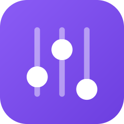

Per-app volume for Windows, done right. One hand on the mouse, no key held, nothing to install.
Unsigned: on a new PC Windows SmartScreen may show "Windows protected your PC" once. Choose More info → Run anyway.
Click the normal Windows speaker icon (or press Ctrl+Alt+V) and get every app that has audio: icon, slider, live meter, mute. Drag it anywhere and it stays open.
Wheel over an app's taskbar button changes that app's volume, no key needed. Hover shows its level. Over the clock or empty taskbar: master volume.
Hold Alt and scroll over any window, full-screen games included, to change that app's volume. The modifier is configurable.
The moment an app opens its audio, before you hear anything, Fader sets it to your start level (50 % by default). Per-app rules give some apps their own, or leave them alone.
Every change shows a small glass pill at a fixed spot: top, center or bottom of the screen the mouse is on. Your choice.
Lives in the tray, opens no window on start, one small exe. Settings in %APPDATA%\Fader, or next to the exe in portable mode.
| Do this | Result |
|---|---|
| Click the speaker tray icon | Opens Fader's mixer instead of the Windows slider. Right-click stays Windows'. |
| Ctrl+Alt+V | Opens the mixer where the mouse is. Configurable. |
| Wheel over a taskbar button | That app's volume. Hovering shows the level pill. |
| Wheel over clock / tray / empty taskbar | Master volume. |
| Alt + wheel over a window | That app's volume, wherever the window is, games included. |
| Click an app's icon in the mixer | Mute / unmute it. |
| Drag the mixer, or click its pin | It stays open until Esc, the pin, or the tray. |
| Right-click Fader's tray icon | Open mixer · Settings · Start with Windows · Quit. |
Taskbar scrolling, hover pill, speaker-icon click, the Alt gesture and its modifier (Alt, Ctrl+Alt, Shift+Alt, Ctrl+Shift), the wheel step (1 / 2 / 5 %), pill on/off and its position.
The hotkey, start with Windows.
The default start level and per-app rules: an app can have its own start level or be left alone. Apps already playing when Fader starts are never touched.
Grab the portable zip from the latest release, unzip anywhere (a folder on your tools drive is perfect).
It appears in the tray. Click the Windows speaker icon to see the mixer.
Settings → "Start Fader when Windows starts". For a USB stick, drop an empty file named portable next to the exe and it keeps its settings there.
Command line: Fader.exe --quit asks a running Fader to exit, Fader.exe --autostart starts it and switches start-with-Windows on, Fader.exe --probe out.json is a headless self-test.
Apps running as administrator do not receive the scroll gestures unless Fader itself runs elevated (Windows rule). The mixer still controls them.
A video mastered louder than the voice chat next to it is a loudness problem, not a volume one. Windows' per-app meter cannot tell the two apart, so Fader does not pretend to; Windows' own "Loudness Equalization" (device properties → Enhancements) flattens everything system-wide if you want that.
.NET 8 SDK, then dotnet publish (see the README in the repo). C#, WPF, NAudio for Windows Core Audio.
--quit and --autostart.